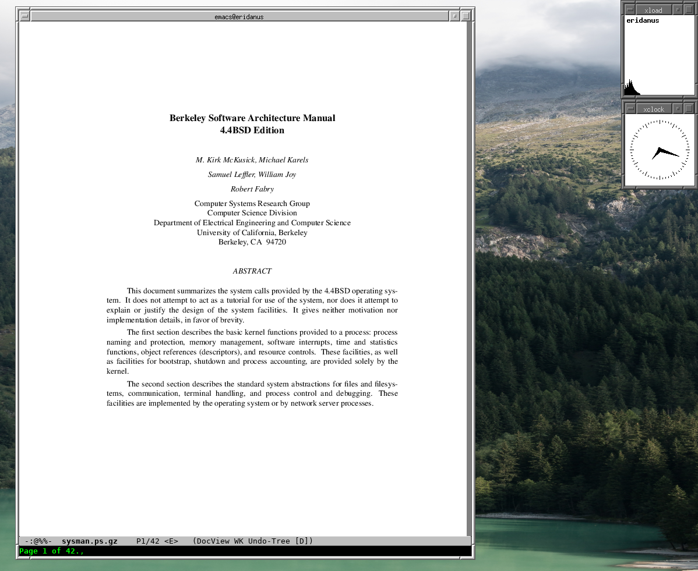

Installation of NetBSD on a Mac Mini
What's the problem?
Over the easter days I was planning to resurrect my trusty ppc based Mac Mini and to replace the old OSX 10.4 with a newer, but still BSD-based operating system. The first try was to install OpenBSD, which went quite smoothly and without great hassles. Fine.
But, as I made my first steps into the unix land many years ago using NetBSD on my m68k based Amiga, I was eager to also have a look at the current NetBSD versions. Phew, that was one kind of a ride! There are a few obstacles to overcome when trying to install NetBSD/macppc on a Mac Mini, which made me learn a lot of new details about that hardware and about the boot process. So I thought I'd write a little bit about my experiences in case someone else (probably me) ever tries to install this combination again.
Overview
When installing a current NetBSD into an intel based vm, the sysinst tool covers
the installation process quite well. The reasons why this doesn't work so well
on the ppc based Mac Mini (and also the solutions or at least some workarounds) can all
be found in the extensive installation document. But as it is rather long, covering a
range of different systems, it is quite a challenge to extract the
needed information—each time hitting a problem you have to re-read large
portions until you find the missing detail. The four major points for me were:
- The system is not able to boot directly off the bsd root file
system. This means you need at least a small mac hfs-formatted
partition to place the bootloader in. This is not done
automatically and the
hfsutils, needed to access such a fs, are not part of the base system. - When partitioning and formatting the disk, the
sysinsttool generates bsd disklabels while the Mac Mini firmware (Open Firmware 3.0) needs an applepdisk-style partition table. OpenBSD apparently overcomes this by using just two basicpdiskpartitions—a small boot partition and the rest, which is then partitioned using bsd disklabels. NetBSD for macppc seemingly needs all partitions to bepdiskpartitions, which means you have to leave out the partitioning stage ofsysinstand instead manually partition your disk (and manually generate an adjacent/etc/fstab). - When doing the first reboot after installing the base sets, you'll find that
the bootloader,
ofwboot.xcf, which is able to boot a Mac Mini from CD, panics. Instead you need to useofwboot.elf, which is hidden on the installation cd in some subdirectory. - Finally, your system boots, but stays with a white screen. This is because NetBSD on the Mac Mini doesn't know to activate the screen console. So you need to configure an Open Firmware boot command writing something on the screen before loading the boot program, this way activating the console. (This also seems to occur when quitting a running X11 server..)
Step by step
When you still have an osx/ppc install cd, first use that to partition your disk,
saving you some steps. On my 100GB disk, I created four partitions: a 4 MB hfs
boot partition, a large Apple/UX main partition and two small (16 and 5 GB)
partitions for swap and tmp. Also, use that chance to copy over both
ofwboot.* files and the netbsd.macppc installation kernel to the
hfs boot partition. Then you can skip a few steps, being able to
directly boot from disk (and later on have a recovery partition at
hand). From there, you can also install the sets downloading them on
the fly via HTTP, so you don't need to burn a cd.
In the following, I assume you don't have a mac osx installation cd at hand.
Download a NetBSD/macppc install iso and burn it to a cd.
When in an adventurous mood, instead set up a net boot facility on another computer..
Reboot, going into the firmware.
Hold down CMD/OPT/O/F keys while starting.
This brings you to the Open Firmware prompt.
For the next steps, configure the system to always boot into ofw.
setenv auto-boot? false reset-all
The second command saves the environment changes made by setenv and
restarts, which should bring you again to the Open Firmware prompt.
Some other useful commands at this prompt:
printenv dir cd:,\macppc devalias
They show the current configuration and list the contents of some Open Firmware accessable directory. So you can make sure you have the correct paths in your configuration. The third one can be used to define alternate boot procedures, probably useful for update/recovery.
Insert Install CD and boot.
boot cd:,\ofwboot.xcf netbsd.macppc
Whenever you want to restart from the install cd, use this command. The Installation CD uses a special kernel containing a ram disk with a minimal NetBSD root partition, containing some basic system commands. Nevertheless, it is a self-contained NetBSD system which can be started without modifying the disk. At times, this may come in handy.
After booting, you can select to start sysinst, the system installer, or to
drop into a shell. Select Install.
You may choose the Utility menu and
Configure network. Later on, this is useful to install pkgsrc.
Partition your disk.
Go to the Utility menu and Run /bin/sh, then call pdisk.
pdisk /dev/rwd0c
Using p, you can print the current map and ? for help on further commands.
Create the partitions you want to use. The first partition should be your HFS
type boot partition. You should probably make it large enough to also put in
the installation kernel. It is around 3 MB in size, so I'd advice to take
minimally 4 MB for it.
My partition table looks like this:
#: type name length base ( size ) 1: Apple_partition_map Apple 63 @ 1 2: Apple_HFS boot 2048 @ 64 ( 1.0M) 3: Apple_UNIX_SVR2 root 188743680 @ 2112 ( 90.0G) S0 RUFS k0 / 4: Apple_UNIX_SVR2 swap 33554432 @ 188745792 ( 16.0G) S1 SFS k0 (swap) 5: Apple_UNIX_SVR2 tmp 12141424 @ 222300224 ( 5.8G) S2 UFS k0
Here you are at the point of no return. Write the partition map using w and
quit pdisk. Now you can use disklabel wd0 to find out the identifiers of the
new partitions.
Format the root and tmp partition.
newfs /dev/rwd0a newfs /dev/rwd0g
The swap partition need not be formatted. If you create other partitions, format them accordingly.
Mount it and write /etc/fstab
mount /dev/wd0a /mnt
The installation manual now suggests to write the fstab file using cat.
The downside of this is, after making a mistake, you can start all over again. But
actually there is an editor on board of the installation ram disk: ed(1),
the standard text editor ;-)
If you know to use vi and also its command facility, you probably also will
be able to use ed. When making a mistake, you can substitute it (or just
replace that line), without needing to start all over again.
mkdir /mnt/etc
ed /mnt/etc/fstab
a
/dev/wd0a / ffs rw 1 1
/dev/wd0b none swap sw 0 0
/dev/wd0g /tmp ffs rw 1 2
.
wq
Later on, you may also put in lines for ptyfs, tmpfs etc.
Afterwards, unmount the disk and return to sysinst.
umount /mnt
exit
Actually install the system.
When reaching this point, you made it behind most of the obstacles and now get
to a place where other NetBSD users comfortably have been led to by sysinst. Select
Re-install or install additional sets and now you can choose which sets you
want to install onto your new system. Then you may also configure first parts
of the system, as the installation manual suggests.
Prepare the boot partition.
Now, once again, a small detour. The hfsutils must be built to format the
boot partition and to copy over the boot program. To do this, the system must
be booted, which can be done for now using the cd as bootstrapper. So exit and
reboot into the Open Firmware prompt, leaving the cd in.
Then, as mentioned above, the elf variant of ofwboot must be employed to
boot the disk.
boot cd:,\macppc\installation\ofwboot.elf hd:3,/netbsd
The system boots into single user mode (you may need to press return to see the prompt). Mount the root filesystem read-write:
mount -uw /
If you didn't install pkgsrc before, call sysinst again, setup the network
configuration and use the menu to download and install pkgsrc. Then build
hfsutils:
cd /usr/pkgsrc/sysutils/hfsutils
make
make install
make clean
Then format the boot partition (see the output of disklabel above for the
id—in my case it is d) and copy over the boot program from cd. If you have
enough space, also copy over the installation kernel:
hformat /dev/wd0d mount /dev/cd0a /mnt hcopy /mnt/macppc/installation/ofwboot.elf : hcopy /mnt/netbsd.macppc :
Setup Open Firmware for NetBSD boot.
Again, reboot into Open Firmware prompt. Now, you may also eject the cd. The boot device and boot file can now be setup to use the boot loader on the hfs partition and boot the kernel from root filesystem. Also, auto boot can be reactivated. Last but not least, the screen console should be activated before starting to boot.
setenv boot-device hd:2,ofwboot.elf setenv boot-file hd:3,/netbsd setenv auto-boot? true setenv boot-command ." Booting NetBSD..." cr " screen" output boot reset-all
With the last command you made it! The system now reboots into NetBSD solely
from disk. You may again call sysinst to install further sets, and you
should follow the post installation steps of the installation guide.
Finally
At least for me, quite a few iterations were needed to get here. Nevertheless, having NetBSD finally running again on real hardware feels a little bit like coming home after a long time. 
On the NetBSD mailing lists other fancy modes of installation are discussed, including writing a small cd image containing the boot programs and then dumping it directly onto the harddisks first sectors. While this may be a way of performing a more automated installation, it doesn't seem to be a convenient way for now.